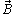
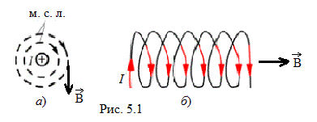

5.1.2.1. Изображение магнитного поля и направление магнитной индукции
Графически магнитное поле принято изображать с помощью магнитных силовых линий (м. с. л.), которые проводят так, чтобы касательные к ним определяли направления векторов магнитной индукции, а плотность линий была пропорциональна длине этих векторов. При этом условно положительное направление м. с. л. вокруг проводника с током (рис. 5.1а) связано с направлением тока в проводнике правилом правоходового винта: направление магнитной индукции  должно совпадать с направлением касательной к магнитным силовым линиям.

Направление м. с. л. и магнитной индукции созданного электрическим током I магнитного поля в катушке (соленоиде) определяют посредством так называемого правила охвата: если правую руку положить на соленоид так, чтобы четыре пальца совпали с направлением тока в его витках, то большой палец укажет направление м. с. л. и магнитной индукции (рис. 5.1б).